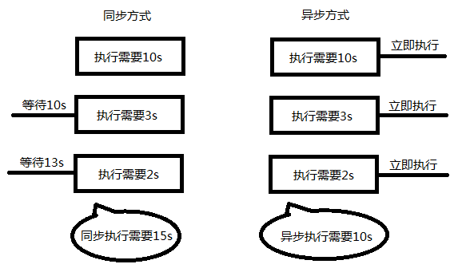

前言
我们使用php动态渲染页面时，有很多比较麻烦的地方。
- 在前端写好页面以后，需要后台进行修改，意味这后端程序员也需要懂前端的知识，其实渲染的工作应该交给前端来做。
- 前端没有写好页面的话，后端无法开始工作，需要等待前端的页面完成之后才能开始工作，拖延项目的进度。
- 这种渲染，属于同步渲染，先获取数据, 如果数据获取的慢了, 会严重影响整个页面渲染速度, 且数据更新需要页面刷新
【演示：同步渲染】
http 协议回顾
HTTP协议，即超文本传输协议(Hypertext transfer protocol)。是一种详细规定了浏览器和服务器之间互相通信的规则
HTTP协议规定了请求 和响应 的标准
请求与请求报文
get请求的请求报文详解
//--------------------------请求行--------------------------------
// GET 请求方式
// /day02/01.php?username=pp&password=123456 请求路径+参数（注意点）
// HTTP/1.1 HTTP的版本号
GET /day02/01.php?username=pp&password=123456 HTTP/1.1
//--------------------------请求头--------------------------------
Host: www.study.com
Connection: keep-alive
Upgrade-Insecure-Requests: 1
User-Agent: Mozilla/5.0 (Windows NT 10.0; WOW64) AppleWebKit/537.36 (KHTML, like Gecko) Chrome/58.0.3029.96 Safari/537.36
Accept: text/html,application/xhtml+xml,application/xml;q=0.9,image/webp,`*/*`;q=0.8
Accept-Encoding: gzip, deflate, sdch
Accept-Language: zh-CN,zh;q=0.8,en;q=0.6
//----------------------------请求体-------------------------------------
//get请求没有请求体，但是参数会拼接到请求行中POST请求的请求报文
//-----------------------请求行---------------------------------------------
POST /day02/01.php HTTP/1.1
//-----------------------请求头--------------------------------------------
Host: www.study.com
Connection: keep-alive
//传递的参数的长度。
Content-Length: 29
Cache-Control: max-age=0
Origin: http://www.study.com
Upgrade-Insecure-Requests: 1
User-Agent: Mozilla/5.0 (Windows NT 10.0; WOW64) AppleWebKit/537.36 (KHTML, like Gecko) Chrome/58.0.3029.96 Safari/537.36
//内容类型：表单数据，如果是post请求，必须指定这个属性。
Content-Type: application/x-www-form-urlencoded
Accept: text/html,application/xhtml+xml,application/xml;q=0.9,image/webp,`*/*`;q=0.8
Referer: http://www.study.com/day02/01-login.html
Accept-Encoding: gzip, deflate
Accept-Language: zh-CN,zh;q=0.8,en;q=0.6
//------------------------请求体------------------------------------------
username=pp&password=123456GET请求与POST请求的对比
- GET请求没有请求体，因为GET请求的参数拼接到地址栏中了
- POST请求有请求体，就是传递的参数
- POST请求需要指定content-type属性。
响应与响应报文
//---------------------状态行（响应行）-------------------------------
//HTTP/1.1 HTTP版本
//200 响应的状态
//200表示成功
//304表示读缓存
//404表示找不到资源
//500表示服务端错误
HTTP/1.1 200 OK
//----------------------响应头-----------------------------------------------
Date: Thu, 22 Jun 2017 16:51:22 GMT
Server: Apache/2.4.23 (Win32) OpenSSL/1.0.2j PHP/5.4.45
X-Powered-By: PHP/5.4.45
Content-Length: 18
Keep-Alive: timeout=5, max=100
Connection: Keep-Alive
//内容类型，告诉浏览器该如何解析响应结果
Content-Type: text/html;charset=utf-8
//-----------------------响应体------------------------------------------------
hello worldAJAX
即 Asynchronous [e'sɪŋkrənəs] Javascript And XML， AJAX 不是一门的新的语言，而是对现有技术的综合利用。 本质是在HTTP协议的基础上以异步的方式与服务器进行通信。
同步与异步
同步和异步概念：
同步: 指的就是事情要一件一件做。等做完前一件才能做后一件任务
异步: 不受当前任务的影响，两件事情同时进行，做一件事情时，不影响另一件事情的进行。
编程中：异步程序代码执行时不会阻塞其它程序代码执行,从而提升整体执行效率。
网页异步应用：
- 验证你的用户名是否已经存在（一边输入，一边获取你的信息，和后台比对）。
- 百度搜索提示，及相关内容展示（一边输入，一边找出了你可能要的内容）。
- 新浪微博评论（异步加载）。
XMLHttpRequest可以以异步方式的请求数据处理程序, 可实现对网页的部分更新， 而不是刷新整个页面
XMLHttpRequest对象
浏览器内建对象，用于与服务器通信(交换数据) ， 由此我们便可实现对网页的部分更新，而不是刷新整个页面。这个请求是异步的，即在往服务器发送请求时，并不会阻碍程序的运行，浏览器会继续渲染后续的结构。
请求由客户端发起，其规范格式为：请求行、请求头、请求主体。
发送get请求
XMLHttpRequest以异步的方式发送HTTP请求，因此在发送请求时，一样需要遵循HTTP协议。
使用XMLHttpRequest发送get请求的步骤
//1. 创建一个XMLHttpRequest对象
var xhr = new XMLHttpRequest();
//2. 设置请求行
// 第一个参数:请求方式 get/post
// 第二个参数:请求的地址 需要在url后面拼上参数列表
xhr.open("get", "01.php?name=Jepson");
//3. 设置请求头
//请求头中可以设置Content-Type,用以说明请求主体的内容是如何编码,get请求时没有请求体,无需设置
//4. 设置请求体
//get请求的请求体为空,因为参数列表拼接到url后面了
xhr.send(null);注意点 :
- get请求,设置请求行时,需要把参数列表拼接到url后面
- get请求不用设置请求头, 不用说明请求主体的编码方式
- get请求的请求体为null
发送post请求
var xhr = new XMLHttpRequest();
// 1. 设置请求行 post请求的参数列表在请求体
xhr.open("post", "02.php");
// 2. 设置请求头, post 请求必须要设置 content-type, 标记请求体内容的解析方式, 不然后端无法解析获取数据
xhr.setRequestHeader( "content-type", "application/x-www-form-urlencoded" );
// 3. 设置请求体
xhr.send( "name=Jepson&age=18" );注意点 :
- post请求, 设置请求行时, 不拼接参数列表
- post必须设置请求头中的content-type为application/x-www-form-urlencoded, 标记请求体解析方式
- post 请求需要将参数列表设置到请求体中
获取响应 readyState
readyState:记录了XMLHttpRequest对象的当前状态
readyState有五种可能的值：
xhr.readyState = 0时，UNSENT open尚未调用
xhr.readyState = 1时，OPENED open已调用
xhr.readyState = 2时，HEADERS_RECEIVED 接收到头信息
xhr.readyState = 3时，LOADING 接收到响应主体
xhr.readyState = 4时，DONE 响应完成
不用记忆状态，只需要了解有状态变化这个概念HTTP响应分为3个部分，状态行、响应头、响应体。
//给xhr注册一个onreadystatechange事件，当xhr的状态发生状态发生改变时，会触发这个事件。
xhr.onreadystatechange = function () {
if(xhr.readyState == 4){
//1. 获取状态行
console.log("状态行:"+xhr.status);
//2. 获取响应头
console.log("所有的响应头:"+xhr.getAllResponseHeaders());
console.log("指定响应头:"+xhr.getResponseHeader("content-type"));
//3. 获取响应体
console.log(xhr.responseText);
}
}案例
【判断用户名是否存在】
【用户登录案例】
【聊天机器人案例】
数据交互
浏览器端只是负责用户的交互和数据的收集以及展示，真正的数据都是存储在服务器端的。
我们现在通过ajax的确可以返回一些简单的数据（一个字符串）,
但是在实际开发过程中，肯定会会设计到大量的复杂类型的数据传输，
比如数组、对象等，但是每个编程语言的语法都不一样。
因此我们会采用通过的数据交换格式（XML、JSON）来进行数据的交互。XML(了解即可)
什么是XML
- XML 指可扩展标记语言（EXtensible Markup Language）
- XML 是一种标记语言，很类似 HTML
- XML 的设计宗旨是传输数据，而非显示数据
- XML 标签没有被预定义。您需要自行定义标签。
语法规范
- 第一行必须是版本信息
- 必须有一个根元素（有且仅有一个）
- 标签不可有空格、不可以数字或.开头、大小写敏感
- 不可交叉嵌套，都是双标签，如果是单标签，必须闭合
- 属性双引号（浏览器自动修正成双引号了）
- 特殊符号要使用实体
- 注释和HTML一样
<?xml version="1.0" encoding="utf-8" ?>
<students>
<student>
<name>张三</name>
<age>18</age>
<gender>男</gender>
<desc>路人甲</desc>
</student>
<student>
<name>李四</name>
<age>20</age>
<gender>男</gender>
<desc>路人乙</desc>
</student>
</students>php获取xml文件的内容
// 注意: 如果需要返回 xml 数据, 需要将 content-type 改成 text/xml, 不然浏览器以 text/html 解析
header( 'content-type:text/xml;charset=utf-8' );
// file_get_content 用于获取文件的内容
// 参数: 文件的路径
$result = file_get_content( "data.xml" );
echo $result;js解析xml
//获取服务端返回的xml数据，需要使用xhr.responseXML，这是一个document对象，可以使用DOM中的方法查找元素。
var data = xhr.responseXML;
//获取所有的学生
var students = data.querySelectorAll("student");缺点：虽然可以描述和传输复杂数据，但是其解析过于复杂, 并且体积较大，所以实现开发已经很少使用了。
JSON数据
JSON(JavaScript Object Notation, JS 对象标记) 是一种轻量级的数据交换格式。它基于 ECMAScript 规范，采用独立于编程语言的文本格式来存储和表示数据。
- 数据在 键值对 中
- 数据由逗号分隔(最后一个 键值对 不能带逗号)
- 花括号保存对象，方括号保存数组
- 键使用双引号
var obj = {a: 'Hello', b: 'World'}; //这是一个对象
// 这是一个 JSON 字符串，本质是一个字符串
var json = '{"a": "Hello", "b": "World"}';JSON数据在不同语言进行传输时，类型为字符串，不同的语言各自也都对应有解析方法，解析完成后就能很方便的使用了
php处理json
- php关联数组 ==> json ( json_encode )
// php的关联数组
$obj = array(
"a" => "hello",
"b" => "world",
"name" => "鹏鹏"
);
//json字符串
$json = json_encode( $obj );
echo $json;- json ==> php对象/关联数组 ( json_decode )
$json = '{"a": "Hello", "b": "World"}';//json字符串
//第一个参数：json字符串
//第二个参数：
//false，将json转换成对象(默认)
//true：将json转换成数组(推荐)
$obj = json_decode($json,true);
echo $obj['a'];
//通过json文件获取到的内容就是一个json字符串。
$data = file_get_contents("data.json");
//将json转换成数组
$result = json_decode($data, true);
print_r($result);JS处理json
JS对象 ==> JSON字符串 JSON.stringify(obj)
//obj是一个js对象 var obj = {a: 'Hello', b: 'World'} //result就变成了一个json字符串了 var result = JSON.stringify(obj);// '{"a": "Hello", "b": "World"}'JSON字符串 ==> JS对象 JSON.parse(obj)
//json是一个json字符串 var json = '{"a": "Hello", "b": "World"}'; //obj就变成了一个js对象 var obj = JSON.parse(json);// {a: 'Hello', b: 'World'}
使用json进行数据传输
思考：
- js有一个对象，如何发送到php后台
- php中有一个对象，如何发送到前台。
【案例：获取表格数据.html】
兼容性处理 (了解, 不用处理)
现在一般最多兼容到 IE8, 这里以后见到了知道是在处理兼容性就行了
var xhr = null;
if(XMLHttpRequest){
//现代浏览器 IE7+
xhr = new XMLHttpRequest();
}else{
//老版本的 Internet Explorer （IE5 和 IE6）使用 ActiveX 对象：
xmlHttp = new ActiveXObject("Microsoft.XMLHTTP");
}封装ajax工具函数
每次发送ajax请求，其实步骤都是一样的，重复了大量代码，我们完全可以封装成一个工具函数。
//1. 创建xhr对象
//2. 设置请求行
//3. 设置请求头
//3. 设置请求体
//4. 监听响应状态
//5. 获取响应内容参数提取
| 参数名 | 参数类型 | 描述 | 传值 | 默认值 |
|---|---|---|---|---|
| type | string | 请求方式 | get/post | 只要不传post，就是get |
| url | string | 请求地址 | 接口地址 | 如果不传地址，不发送请求 |
| async | boolean | 是否异步 | true/fase | 只要不传false，那就是true，异步请求 |
| data | object | 请求数据 | {key:value,key1:value2} |
需要把这个对象拼接成参数的格式 uname=hucc&upass=12345 |
| dataType | string | 返回的数据类型 | xml/json/text | text |
| success | function | 响应成功时调用 | - | - |
| error | function | 响应失败时调用 | - | - |
参数检测
// 要求参数obj必须传递，否则直接不发送请求
if(!obj || typeof obj !== "object"){
return;
}
// 如果type传递的是post，那就发送post请求，否则发送get请求
var type = obj.type == "post"?"post":'get';
var url = obj.url;
if(!url){
return;
}
// 只有当async传递了false，才会发送同步请求，不然只发送异步请求
var async = obj.async == false? false:true;完整版本
var $ = {
ajax: function (options) {
//如果options参数没有传递，直接返回。
if (!options || typeof options !== "object") {
return;
}
//处理默认参数
//如果参数不是post，那就默认为get
var type = options.type == "post" ? "post" : "get";
//如果没有传url，那就传当前地址
var url = options.url || location.pathname;
//如果参数不是false，那就默认是true，发异步请求
var async = options.async == false ? false : true;
var params = this.getParams(options.data);
var xhr = new XMLHttpRequest();
//设置请求行
if (type == "get") {
url = url + "?" + params;
}
xhr.open(type, url, async);
//设置请求头
if (type == "post") {
xhr.setRequestHeader("content-type", "application/x-www-form-urlencoded");
}
//设置请求参数
xhr.send(params);
xhr.onreadystatechange = function () {
if (xhr.readyState == 4) {
if (xhr.status == 200) {
/*根据响应头的content-type属性指定方法接收到的内容*/
var contentType = xhr.getResponseHeader('content-type');
var data = null;
if (contentType.indexOf('json') > -1) {
data = JSON.parse(xhr.responseText);
} else if (contentType.indexOf('xml') > -1) {
data = xhr.responseXML;
} else {
data = xhr.responseText;
}
/*执行成功函数*/
options.success && options.success(data);
} else {
options.error && options.error(xhr.responseText);
}
}
}
},
getParams: function (obj) {
//将obj对象转换成参数
//将对象转换成参数列表
if (!obj) {
return null;
}
var arr = [];
for (var k in obj) {
arr.push(k + "=" + obj[k]);
}
return arr.join("&");
}
}【登录案例】
jQuery中的ajax方法
jQuery为我们提供了更强大的Ajax封装
$.ajax
参数列表
| 参数名称 | 描述 | 取值 | 示例 |
|---|---|---|---|
| url | 接口地址 | url:"02.php" | |
| type | 请求方式 | get/post | type:"get" |
| timeout | 超时时间 | 单位毫秒 | timeout:5000 |
| dataType | 服务器返回的格式 | json/xml/text(默认) | dataType:"json" |
| data | 发送的请求数据 | 对象 | data:{name:"zs", age:18} |
| beforeSend | 调用前的回调函数 | function(){} | beforeSend:function(){ alert(1) } |
| success | 成功的回调函数 | function (data) {} | success:function (data) {} |
| error | 失败的回调函数 | function (error) {} | error:function(data) {} |
| complete | 完成后的回调函数 | function () {} | complete:function () {} |
使用示例：
$.ajax({
type:"get",//请求类型
url:"02.php",//请求地址
data:{name:"zs", age:18},//请求数据
dataType:"json",//希望接受的数据类型
timeout:5000,//设置超时时间
beforeSend:function () {
//alert("发送前调用");
},
success:function (data) {
//alert("成功时调用");
console.log(data);
},
error:function (error) {
//alert("失败时调用");
console.log(error);
},
complete:function () {
//alert("请求完成时调用");
}
});【案例：登录案例.html】
其他api(了解)
//$.post(url, callback, [dataType]);只发送post请求
//$.get(url, callback, [dataType]);
//$.getJSON(url, callback);
//$.getScript(url,callback);//载入服务器端的js文件
//$("div").load(url);//载入一个服务器端的html页面。接口化开发
请求地址即所谓的接口，通常我们所说的接口化开发，其实是指一个接口对应一个功能， 并且严格约束了请求参数 和响应结果 的格式，这样前后端在开发过程中，可以减少不必要的讨论， 从而并行开发，可以极大的提升开发效率，另外一个好处，当网站进行改版后，服务端接口进行调整时，并不影响到前端的功能。
获取短信验证码
需求文档(产品)
总需求：点击获取验证码按钮，向服务端发送请求, 调用服务器端短信接口, 服务器端根据传参, 调用第三方短信接口, 给手机发送验证码
需求1：格式校验
(1) 手机号码不能为空 如果为空提示"手机号不能为空"
(2) 手机号码格式必须正确, 提示"请输入正确的手机号码"
需求2：点击发送时，按钮显示为"发送中",并且不能重复提交请求
需求3：根据不同的响应结果，进行响应。
(1)如果接口调用成功
如果响应代码为100，倒计时
如果响应代码为101，提示手机号重复
(2)如果接口调用失败，告诉用户"服务器繁忙，请稍候再试"接口文档
接口说明：获取短信验证码
接口地址：getCode.php
请求方式：get
接口传参：mobile 手机号
返回类型 json
接口返回：{
"code":"101",
"msg":"手机号码存在",
"mobile":"18511249258"
}
参数说明: code 当前业务逻辑的处理成功失败的标识 100:成功 101:手机号码存在
msg 当前系统返回给前端提示
mobile 当前的手机号码注册接口
表单序列化 serialize
jquery提供了一个serialize()方法序列化表单，说白就是将表单中带有name属性的所有参数拼成一个格式为name=value&name1=value1这样的字符串。方便我们获取表单的数据。
//serialize将表单参数序列化成一个字符串。必须指定name属性
//name=pp&pass=123456&repass=123456&mobile=15751776629&code=1234
$('form').serialize();jquery的ajax方法，data参数能够直接识别表单序列化的数据
$.post({
url:"register.php",
data:$('form').serialize(),
dataType:'json',
success:function (info) {
console.log(info);
}
});需求文档
注册功能
总需求：点击注册按钮，向服务端发送请求
需求1:表单校验
1.1 用户名不能为空，否则提示"请输入用户名"
1.2 密码不能为空，否则提示"请输入密码"
1.3 确认密码必须与密码一直，否则提示"确认密码与密码不一致"
1.4 手机号码不能为空，否则提示"请输入手机号码";
1.5 手机号码格式必须正确，否则提示"手机号格式错误"
1.6 短信验证码必须是4位的数字，否则提示"验证码格式错误"
需求2：点击注册按钮时，按钮显示为"注册中...",并且不能重复提交请求
需求3：根据不同响应结果，处理响应
3.1 接口调用成功
100 提示用户注册成功，3s后跳转到首页
101 提示用户"用户名jepson已经存在"
102 提示用户"验证码错误"
3.2 接口调用失败，提示"服务器繁忙，请稍后再试",恢复按钮的值接口文档
接口说明：注册
接口地址：register.php
请求方式：post
接口传参：name:用户名 pass:密码 code:验证码 mobile:手机号
返回类型 json
接口返回：{
"code":"100",
"msg":"注册成功",
"name":"Jepson"
}
参数说明:
code 当前业务逻辑的处理成功失败的标识 100:成功 101:用户存在 102:验证码错误
msg 当前系统返回给前端提示
name: 注册的用户名模板引擎
是为了使用户界面与业务数据（内容）分离而产生的，它可以生成特定格式的文档，用于网站的模板引擎就会生成一个标准的HTML文档。
为什么要使用模板引擎
我们通过ajax获取到数据后，需要把数据渲染到页面，在学习模板引擎前，我们的做法是大量的拼接字符串，对于结构简单的页面，这么做还行
但是如果页面结构很复杂，使用拼串的话代码可阅读性非常的差，而且非常容易出错，后期代码维护也是相当的麻烦。
【演示：使用拼串进行渲染的缺点.html】
总结来说拼串渲染两大缺点：
- js中大量充斥着 html 结构拼串代码， 很冗余， 可读性差
- 字符串拼接很麻烦， 且维护起来也很麻烦， 容易出错
常见的模板引擎
BaiduTemplate：http://tangram.baidu.com/BaiduTemplate/ velocity.js：https://github.com/shepherdwind/velocity.js/ ArtTemplate：https://github.com/aui/artTemplate
artTemplate是使用最广泛，效率最高的模板引擎，需要大家掌握。
artTemplate的使用
artTemplate入门
1.引入模板引擎的js文件
<script src="template-web.js"></script>2.准备模板
<!--
指定了type为text/html后，这一段script标签并不会解析，也不会显示。
-->
<script type="text/html" id="myTmp">
<p>姓名：隔壁老王</p>
<p>年龄：18</p>
<p>技能：查水表</p>
<p>描述：年轻力气壮</p>
</script>3.准备数据
//3. 准备数据,数据是后台获取的，可以随时变化
var json = {
userName:"隔壁老王",
age:18,
skill:"查水表",
desc:"年轻气壮"
}4.将模板与数据进行绑定
//第一个参数：模板的id
//第二个参数：数据
//返回值：根据模板生成的字符串。
var html = template("myTmp", json);
console.log(html);5.修改模板
<script type="text/html" id="myTmp">
<p>姓名：{{userName}}</p>
<p>年龄：{{age}}</p>
<p>技能：{{skill}}</p>
<p>描述：{{desc}}</p>
</script>6.将数据显示到页面
var div = document.querySelector("div");
div.innerHTML = html;artTemplate标准语法
if语法
{{if gender='男'}}
<div class="man">
{{else}}
<div class="woman">
{{/if}}each语法
<!--
1. {{each data}} 可以通过$value 和 $index获取值和下标
2. {{each data v i}} 自己指定值为v，下标为i
-->
{{each data v i}}
<li>
<a href="{{v.url}}">
<img src="{{v.src}}" alt="">
<p>{{v.content}}</p>
</a>
</li>
{{/each}}//如果返回的数据是个数组，必须使用对象进行包裹，因为在{{}}中只写书写对象的属性。
var html = template("navTmp", {data:info});瀑布流案例
封装jQuery瀑布流插件
//特点分析：
//1. 跟以前将的瀑布流不一样的是，这次的瀑布流固定版心为1200px
//2. 瀑布流固定摆放5列，每一列的宽度固定为232px。
//思路分析：
//1. 计算每一列之间的缝隙
//2. 初始化一个数组，用户存储每一列的高度 [0,0,0,0,0]
//3. 查找数组的最小列，每次都把图片定位到最小列的位置
//4. 更新数组最小列的高度（加上定位过来的图片的高度）代码参考：
$.fn.waterfall = function () {
var $box = $(this);
var $item = $box.children();
var boxWidth = $box.width();//父盒子的宽度
var itemWidth = 232;//每个盒子固定宽度为232
var columns = 5;//固定摆放5列
var gap = (boxWidth - columns * itemWidth) / (columns - 1);//缝隙的宽度 10
var arr = [0, 0, 0, 0, 0]; //初始化数组
$item.each(function () {
//查找最小列
var min = arr[0];
var minIndex = 0;
for (var i = 0; i < arr.length; i++) {
if (min > arr[i]) {
min = arr[i];
minIndex = i;
}
}
//设置位置
$(this).css({
left: minIndex * (itemWidth + gap),
top: min
});
//更新数组
arr[minIndex] = min + $(this).outerHeight() + gap;
});
}瀑布流完整版
//需求分析：
//1. 页面刚开始，没有任何一张图片。因此需要从通过ajax获取图片
//2. 使用模版引擎将获取到的数据渲染到页面
//3. 因为图片路径是从服务端获取的，加载需要时间，需要等待图片加载完成后才能使用瀑布流进行布局。
//4. 给window注册scroll事件，当触底时，需要动态的加载图片。
//5. 加载时，显示加载中的提示信息，并且要求不能重复发送ajax请求
//6. 当服务端返回图片数量为0时，提示用户没有更多数据。接口文档
//接口说明：瀑布流分页数据
//接口地址：data.php
//请求方式：get
//接口参数：page 当前是第几页 pageSize 当前页需要显示多少条
//返回类型 json
//返回数据：
{
page: 2,
items:[
{path: "./images/1.jpg",text:'这是描述信息'},
{path: "./images/2.jpg",text:'这是描述信息'}
{path: "./images/2.jpg",text:'这是描述信息'}
]
}
//page 下一页的页码
//items 返回当前页的数据
//path 图片地址
//text 文字同源与跨域
同源
同源策略的基本概念
1995年，同源政策由 Netscape 公司引入浏览器。目前，所有浏览器都实行这个政策。 同源策略：最初，它的含义是指，A网页设置的 Cookie，B网页不能打开，除非这两个网页"同源"。所谓"同源"指的是"三个相同"。
协议相同
域名相同
端口相同举例来说，这个网址http://www.example.com/dir/page.html协议是http://，
域名是www.example.com，端口是80（默认端口可以省略）。它的同源情况如下。
http://www.example.com/dir2/other.html：同源
file:///F:/phpStudy/WWW/day01/04-demo/04.html 不同源(协议不同)
http://v2.www.example.com/dir/other.html：不同源（域名不同）
http://www.example.com:81/dir/other.html：不同源（端口不同）同源策略的目的
同源政策的目的，是为了保证用户信息的安全，防止恶意的网站窃取数据。
同源策略的限制范围
随着互联网的发展，“同源策略”越来越严格，目前，如果非同源，以下三种行为都将收到限制。
1. Cookie、LocalStorage 和 IndexDB 无法读取。
2. DOM 无法获得。
3. AJAX 请求不能发送。虽然这些限制是很有必要的，但是也给我们日常开发带来不好的影响。比如实际开发过程中，往往都会把服务器端架设到一台甚至是一个集群的服务器中，把客户端页面放到另外一个单独的服务器。那么这时候就会出现不同源的情况，如果我们知道两个网站都是安全的话，我们是希望两个不同源的网站之间可以相互请求数据的。这就需要使用到跨域 。
跨域
【演示跨域问题.html】
jsonp( 无兼容性问题 )
JSONP(JSON with Padding)、可用于解决主流浏览器的跨域数据访问的问题。
原理：服务端返回一个定义好的js函数的调用，并且将服务器的数据以该函数参数的形式传递过来，这个方法需要前后端配合
script 标签是不受同源策略的限制的，它可以载入任意地方的 JavaScript 文件。类似的还有img和link标签
<!--不受同源策略限制的标签-->
<img src="http://www.api.com/1.jpg" alt="">
<link rel="stylesheet" href="http://www.api.com/1.css">
<script src="http://www.api.com/1.js"></script>jsonp演化过程1
php文件
header("content-type:text/html;charset=utf-8");
echo "alert(1111)";html文件
<script src="http://www.api.com/testjs.php"></script>原理：其实src的路径是什么文件不重要，无论引入js文件还是php文件，最后返回给浏览器的都是字符串，因此我们script标签是可以引入一个php文件的。
jsonp演化过程2
php文件
header("content-type:text/html;charset=utf-8");
echo "var a = 118;";html文件
<script src="http://www.api.com/testjs.php"></script>
<script>
//a打印出来了118
console.log(a);
</script>我们现在做到了一件事情，从不同源的php文件中获取到了数据
缺点：获取数据的script标签必须写在使用的script标签的前面，必须保证先有数据才能对数据进行渲染。
jsonp演化过程3
php代码
header("content-type:text/html;charset=utf-8");
$arr = array(
"name"=>"zs",
"age"=>18
);
$result = json_encode($arr);
//这是一段js函数的调用的代码，$result就是我们想要的数据
echo "func($result)";js代码
<script>
function func(data) {
console.log(data);
}
</script>
<script src="http://www.api.com/testjs.php"></script>缺点：后端必须知道前端声明的方法的名字，后端才能调用。
jsonp演化过程4
php代码
header("content-type:text/html;charset=utf-8");
$arr = array(
"name"=>"zs",
"age"=>18
);
$result = json_encode($arr);
//这是一段js函数的调用的代码，$result就是我们想要的数据
echo $_GET['callback']."($result)";javascript代码
function fun(data) {
console.log(data);
}
var button = document.querySelector("button");
button.onclick = function () {
var script = document.createElement("script");
script.src = "http://www.api.com/testjs.php?callback=fun";
document.body.appendChild(script);
}- 说白了，jsonp的原理就是 借助了script标签 src 请求资源时, 不受同源策略的限制.
- 在服务端返回一个函数的调用，将数据当前调用函数的实参。
- 在浏览器端，需要程序要声明一个全局函数，通过形参就可以获取到服务端返回的对应的值
jsonp原理大家需要知道，但不用太过于去纠结这个原理，因为jquery已经帮我们封装好了，我们使用起来非常的方便。
jquery对于jsonp的封装
//使用起来相当的简单，跟普通的get请求没有任何的区别，只需要把dataType固定成jsonp即可。
$.ajax({
type:"get",
url:"http://www.Jepson.com/testjs.php",
dataType:"jsonp",
data:{
uname:"Jepson",
upass:"123456"
},
success:function (info) {
console.log(info);
}
});【案例：查询天气.html】
【案例：省市区三级联动.html】
XMLHttpRequest2.0
XMLHttpRequest是一个javascript内置对象，使得Javascript可以进行异步的HTTP通信。2008年2月，就提出了XMLHttpRequest Level 2 草案。
老版本的XMLHttpRequest的缺点：
1. 仅支持传输文本数据，无法传说二进制文件，比如图片视频等。
2. 传输数据时，没有进度信息，只能提示完成与否。
3. 受到了"同源策略"的限制新版本的功能：
1. 可以设置timeout超时时间
2. 可以使用formData对象管理表单数据
3. 允许请求不同域名下的数据（跨域）
4. 支持上传二进制文件
5. 可以获取数据传输的进度信息注意：我们现在使用new XMLHttpRequest创建的对象就是2.0对象了，我们之前学的是1.0的语法，现在学习一些2.0的新特性即可。
timeout设置超时
xhr.timeout = 3000;//设置超时时间
xhr.ontimeout = function(){
alert("请求超时");
}formData管理表单数据
formData对象类似于jquery的serialize方法，用于管理表单数据
使用特点：
1. 实例化一个formData对象， new formData(form); form就是表单元素
2. formData对象可以直接作为 xhr.send(formData)的参数。注意此时数据是以二进制的形式进行传输。
3. formData有一个append方法，可以添加参数。formData.append("id", "1111");
4. 这种方式只能以post形式传递，不需要设置请求头，浏览器会自动为我们设置一个合适的请求头。代码示例：
//1. 使用formData必须发送post请求
xhr.open("post", "02-formData.php");
//2. 获取表单元素
var form = document.querySelector("#myForm");
//3. 创建form对象，可以直接作为send的参数。
var formData = new FormData(form);
//4. formData可以使用append方法添加参数
formData.append("id", "1111");
//5. 发送，不需要指定请求头，浏览器会自动选择合适的请求头
xhr.send(formData);文件上传
以前，文件上传需要借助表单进行上传，但是表单上传是同步的，也就是说文件上传时，页面需要提交和刷新，用户体验不友好，xhr2.0中的formData对象支持文件的异步上传。
var formData = new FormData();
//获取上传的文件，传递到后端
var file = document.getElementById("file").files[0];
formData.append("file", file);
xhr.send(formData);显示文件进度信息
xhr2.0还支持获取上传文件的进度信息，因此我们可以根据进度信息可以实时的显示文件的上传进度。
1. 需要注册 xhr.upload.onprogress = function(e){} 事件，用于监听文件上传的进度.注意：需要在send之前注册。
2. 上传的进度信息会存储事件对象e中
3. e.loaded表示已上传的大小 e.total表示整个文件的大小代码参考：
xhr.upload.onprogress = function (e) {
inner.style.width = (e.loaded/e.total*100).toFixed(2)+"%";
span.innerHTML = (e.loaded/e.total*100).toFixed(2)+"%";
}
xhr.send(formData);如果上传文件超过8M，php会报错，需要进行设置，允许php上传大文件。
跨域资源共享(CORS) ( 兼容性IE10+ )
cors的使用
新版本的XMLHttpRequest对象，可以向不同域名的服务器发出HTTP请求。这叫做"跨域资源共享"（Cross-origin resource sharing，简称CORS）。
跨域资源共享（CORS）的前提
- 浏览器支持这个功能( 兼容性IE10+ )
- 服务器必须允许这种跨域。
服务器允许跨域的代码：
//允许所有的域名访问这个接口
header("Access-Control-Allow-Origin:*");
//允许www.study.com这个域名访问这个接口
header("Access-Control-Allow-Origin:http://www.study.com");CORS的具体流程（了解）
浏览器发送跨域请求
服务器端收到一个跨域请求后，在响应头中添加Access-Control-Allow-Origin Header资源权限配置。发送响应
浏览器收到响应后，查看是否设置了
header('Access-Control-Allow-Origin:请求源域名或者*');如果当前域已经得到授权，则将结果返回给JavaScript。否则浏览器忽略此次响应。
结论：
- 跨域行为是浏览器行为，响应式回来了的, 只是浏览器安全机制做了限制, 对于跨域响应内容进行了忽略。
- 服务器与服务器之间是不存在跨域的问题的
jsonp与cors的对比
- jsonp兼容性好，老版本浏览器也支持，但是jsonp仅支持get请求，发送的数据量有限。使用麻烦
- cors需要浏览器支持cors功能才行。但是使用简单，只要服务端设置允许跨域，对于客户端来说，跟普通的get、post请求并没有什么区别。
- 跨域的安全性问题：因为跨域是需要服务端配合控制的 ，也就是说不论jsonp还是cors，如果没有服务端的允许，浏览器是没法做到跨域的。
【案例：图灵机器人】
其他的跨域手段
以下方式基本不用啊，了解即可：
1、顶级域名相同的可以通过domain.name来解决，即同时设置 domain.name = 顶级域名（如example.com） 2、document.domain + iframe 3、window.name + iframe 4、location.hash + iframe 5、window.postMessage()